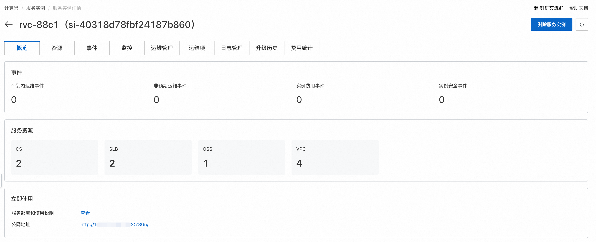
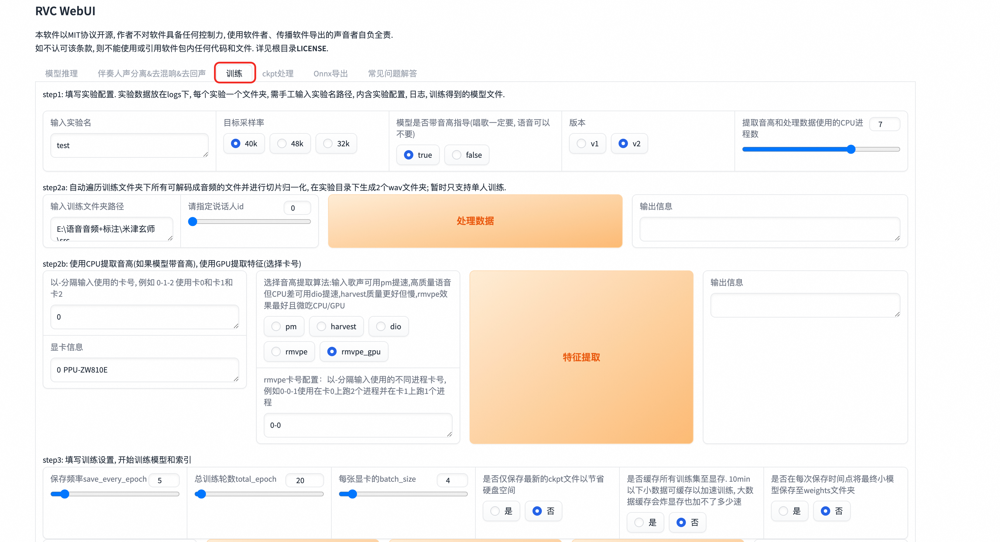
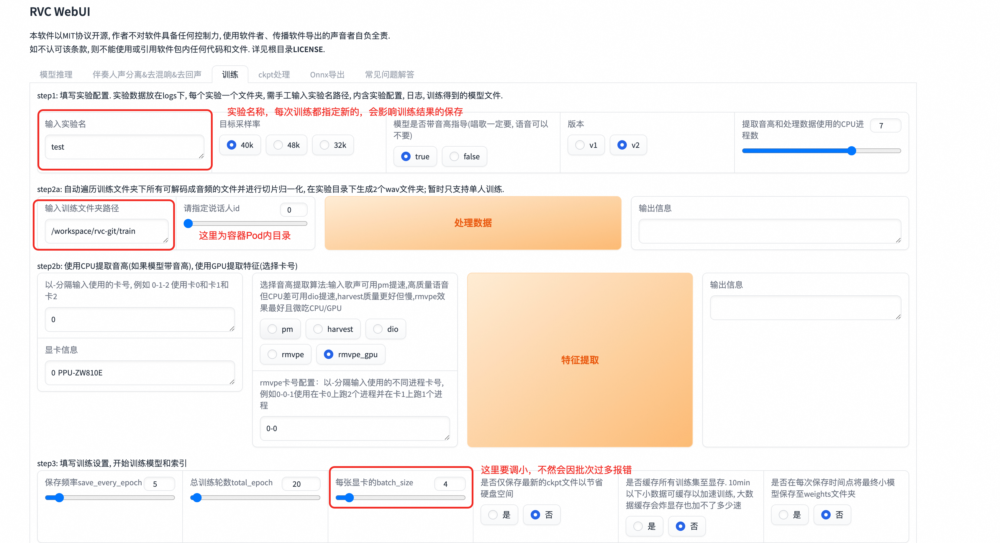
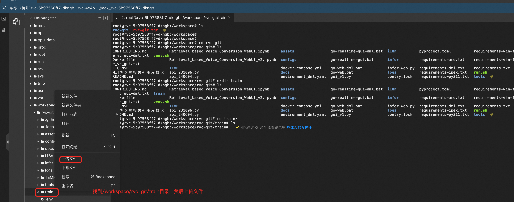
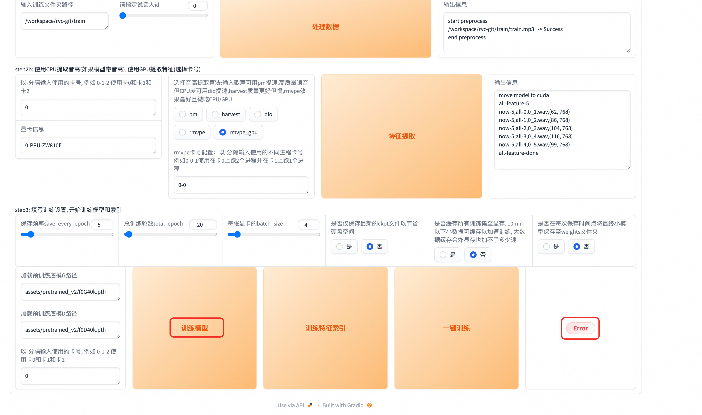

🎤 RVC声音克隆技术指南
基于深度学习的专业声音合成与变声解决方案
🔬 技术简介
**RVC声音克隆技术**（Retrieval-based-Voice-Conversion-WebUI）是一种基于深度学习的声音合成技术。其核心原理在于通过深度学习模型训练，将输入的语音样本与目标说话者的语音特征进行学习和匹配。随后，利用这个模型对新的文本进行语音合成，使得合成的语音听起来就像目标说话者一样。
🎯 工作流程
语音样本训练 → 特征学习匹配 → 模型生成 → 新音频推理 → 声音克隆完成
语音样本训练 → 特征学习匹配 → 模型生成 → 新音频推理 → 声音克隆完成
🚀 快速开始
### 📍 访问服务
在完成模型部署后，可以在计算巢服务实例概览页面看到模型的使用方式，这里的公网地址打开就是对应的Web页面。

💡 使用流程
RVC的使用要先用准备好的语音样本进行训练，训练获取对应的模型后，再对待处理音频进行推理，就可以将待处理音频转换为训练所用的语声，达到变声的效果。
RVC的使用要先用准备好的语音样本进行训练，训练获取对应的模型后，再对待处理音频进行推理，就可以将待处理音频转换为训练所用的语声，达到变声的效果。
🎓 训练教程
步骤 1：进入训练页面
点击服务实例详情中的公网地址，即可进入到RVC Web页面，首先进到训练页面。

步骤 2：配置训练参数
进行训练相关的配置，主要要设置实验名称，训练文件夹，注意这里的文件夹为容器Pod里对应的目录。

⚠️ 重要提示
文件夹路径必须指向容器Pod内的实际目录，确保路径正确性
文件夹路径必须指向容器Pod内的实际目录，确保路径正确性
步骤 3：上传语音样本
将要训练的语音样本上传到设置的训练文件夹中：
#### 3.1 连接到容器Pod
在计算巢服务实例中，点击《资源》→《容器Pod资源》，找到rvc对应的Pod，点击《远程连接》。
 #### 3.2 创建训练目录
在Pod内部/workspace/rvc-git目录下创建train目录，作为训练文件夹。
#### 3.2 创建训练目录
在Pod内部/workspace/rvc-git目录下创建train目录，作为训练文件夹。
 #### 3.3 上传语音文件
通过文件树界面上传准备好的语音样本到train目录。
#### 3.3 上传语音文件
通过文件树界面上传准备好的语音样本到train目录。



步骤 4：数据处理
语音样本上传完成后，点击《处理数据》进行数据处理，输出信息会提示处理进度。

步骤 5：特征提取
点击《特征提取》进行特征提取，输出信息会提示特征提取进度。

步骤 6：模型训练
点击《训练模型》进行模型训练。

⚠️ 注意事项
这里会提示Error，但实际上是误报，训练还是在正常进行。训练进度可以在Pod中执行
这里会提示Error，但实际上是误报，训练还是在正常进行。训练进度可以在Pod中执行
tail -f /var/logs/app.log 命令查看。

步骤 7：构建特征索引
训练完成后，点击《训练特征索引》，看到成功构建索引，就是训练成功了。

✅ 训练完成
成功构建索引表示模型训练完成，可以进行推理操作
成功构建索引表示模型训练完成，可以进行推理操作
🎯 推理教程
训练完成后，我们就可以对我们想要变声的语音进行推理了：
步骤 1：加载训练模型
RVC web页面回到模型推理页面，点击《刷新音色列表和索引路径》，去加载刚才训练完成的模型。

步骤 2：配置推理参数
选择我们刚训练好的模型，设置待处理音频文件路径。

💡 路径设置说明
• 单次推理：路径要到具体文件名称
• 批量推理：设置到目录即可
• 文件需要先上传到Pod容器中（参考训练步骤3）
• 单次推理：路径要到具体文件名称
• 批量推理：设置到目录即可
• 文件需要先上传到Pod容器中（参考训练步骤3）
步骤 3：执行声音转换
点击转换，开始将待处理的音频进行变声，变声完成后，输出音频可以直接播放或下载。

⚠️ 注意事项
转换过程可能会失败，失败后重试即可。建议在网络稳定的环境下进行操作。
转换过程可能会失败，失败后重试即可。建议在网络稳定的环境下进行操作。
📋 操作要点总结
✅ 成功要素
- 高质量语音样本：清晰、无噪音
- 充足的训练数据：建议10-30分钟音频
- 正确的路径配置：确保文件路径准确
- 耐心等待训练：训练时间较长属正常
❌ 常见问题
- 文件路径错误导致找不到文件
- 语音样本质量差影响效果
- 训练时间不足模型未收敛
- 网络不稳定导致操作失败
🎤 RVC声音克隆技术 | 让每个声音都能被完美复制
© 2009-2022 Aliyun.com 版权所有